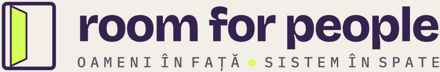

Regula casei · afiș pentru pereteNu e o promisiune de marketing. E limita care decide ce construim și ce refuzăm. Lucrăm cu materialele publice și cu procesele cabinetului. Niciodată cu ce se spune în cameră. Și nimic nu pleacă în numele profesionistului fără să-l fi citit el.
Materiale publice, texte proprii, idei de postări, pagina de prezentare, răspunsul la primul contact. Nimic identificabil despre o persoană.
Program, șabloane de mesaje, întrebări frecvente, structura unui raport fără conținut de caz. Dacă apare un nume, devine roșu.
Orice dată de caz sau de sănătate: nume, note de ședință, înregistrări, mesaje de la clienți, trimiteri, rapoarte cu conținut. Nici anonimizat „puțin”.
Semaforul e o regulă de lucru, nu o clasificare juridică. Obligațiile vin din codul profesiei: CPR pentru psihologi, CNASR pentru asistenți sociali, codul asociației pentru coachi.roomforpeople.ro